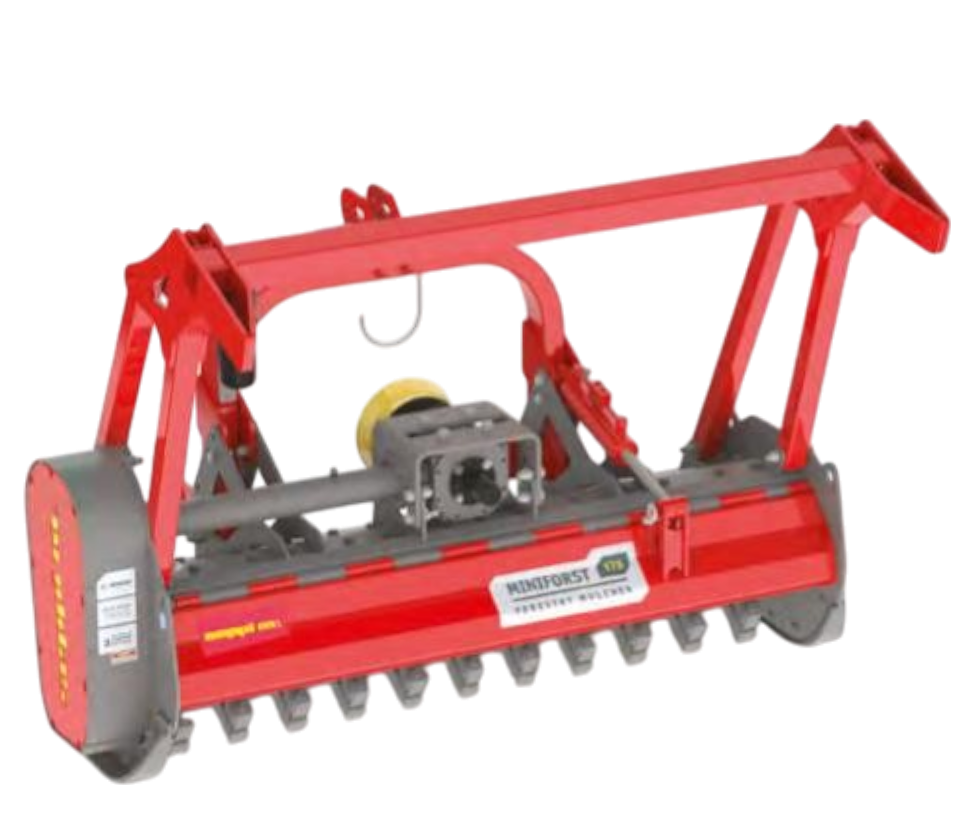

Miniforst Forestal PTO
Más información
- Poda, arbustos y madera hasta Ø 20 cm.
- Velocidad de trabajo: 0–5 km/h.
- Rotor MINI DUO (carburo) brevetado, bajo desgaste.
- Chasis reforzado con deflectores; 3 filas de contracuchillas templadas.
- Opcional: CUT CONTROL con MINI BLADE (limitador de profundidad).
- Puede equiparse con bajador de ramas (opcional).
- Transmisión: multiplicador 1000 rpm, eje pasante; correa 5 bandas.
- Capó hidráulico; patines con altura ajustable.
- Protección frontal con cadenas dobles.
- Anchos de trabajo: 150, 175 y 200 cm.